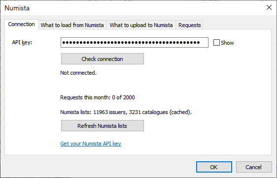
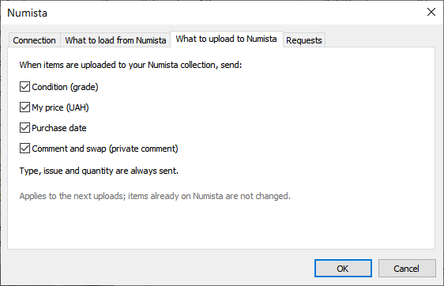
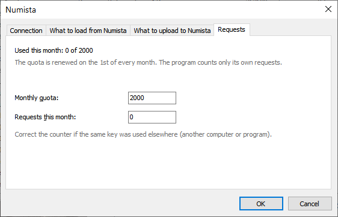

Numista: підключення та запити

Скриншот: images/05-numista-settings.png
Ваш ключ API
Крок за кроком з картинками: Numista: реєстрація та ключ API.
- Зареєструйтеся на numista.com.
- Запросіть свій ключ API (увійшовши на Numista): en.numista.com/api/api_key.php.
- Введіть ключ у Numista → Connect / Settings/Numista → Підключення / налаштування і натисніть Check connection/Перевірити підключення.
Кожен користувач використовує власний ключ. Ключ зберігається лише в CoinsCollection.ini поруч із програмою.
Вкладки налаштувань
- Connection/Підключення — ключ, перевірка підключення, списки Numista.
- What to load from Numista/Що завантажувати з Numista — характеристики типу при автозв'язку (та сама позначка, що й у підтвердженні автозв'язку) і фото типу (зображення з каталогу). Якщо фото вимкнено, зв'язок і оновлення даних каталогу завантажують лише характеристики; вже завантажені фото залишаються. Ціни Numista: увімк. / вимк., валюта, через скільки днів оновлювати — Дані каталогу Numista.
- What to upload to Numista/Що вивантажувати на Numista — які поля примірника надсилати при вивантаженні: стан, моя ціна, дата покупки, коментар і обмін. Тип, випуск і кількість надсилаються завжди. Примірники, вже вивантажені на Numista, не змінюються.
- Requests/Запити — використано цього місяця, місячна квота (змініть, якщо у вас платний тариф Numista) і лічильник (виправте, якщо той самий ключ використовувався деінде).

Скриншот: images/05b-numista-upload.png
Запити та квота
Безкоштовний ключ Numista дає 2000 запитів на місяць. Кожне вікно з підсумком показує, скільки запитів використала операція і скільки використано цього місяця.
Квота — 2000 запитів за календарний місяць, оновлюється 1-го числа. Програма рахує лише власні запити: запити з тим самим ключем деінде (інший комп'ютер, інша програма) не враховуються — виправте лічильник на вкладці Requests/Запити.

Скриншот: images/05c-numista-requests.png
- Відповіді зберігаються в
Numista\: той самий тип ніколи не запитується двічі. Монети одного типу різних років з тим самим номером у каталозі витрачають запити лише один раз — інші роки беруть відповіді з кешу. Підтвердження автозв'язку показує, скільки запитів справді буде надіслано. - Фото — файли сайту Numista, а не запити API: квоту вони не витрачають.
- Звичайні витрати: зв'язок монети — 3–5 запитів; вивантаження позначених — 1 на примірник плюс 2 на запуск; індекс рідкісності — 1 на запуск.